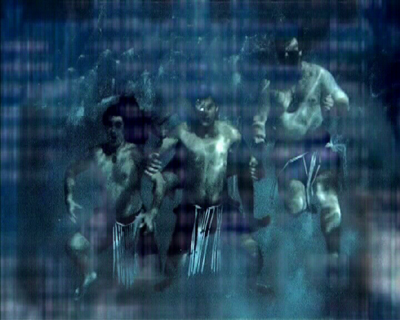
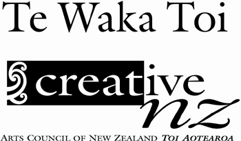

Rachael Rakena Container Culture: Auckland rere ... flow, fly, be carried by the wind, sail, rush, flee, escape, rise, leap, . . .
hiko ... move at random or irregular, lightning, electric, . .
whakapapa ... layering, genealogy  An email announcing the arrival of a newborn child bears the same face as an email expressing sympathy at the loss of a loved one. The digital text of the email and its aesthetic of pixels create the new patterns for the wharenui (meeting house) of cyberspace in which our indigenous community often meet. This work explores the communication using excerpts of real emails circulating within a Ngai Tahu community (an indigenous tribal group from the South Island of New Zealand). An email announcing the arrival of a newborn child bears the same face as an email expressing sympathy at the loss of a loved one. The digital text of the email and its aesthetic of pixels create the new patterns for the wharenui (meeting house) of cyberspace in which our indigenous community often meet. This work explores the communication using excerpts of real emails circulating within a Ngai Tahu community (an indigenous tribal group from the South Island of New Zealand). Rerehiko becomes a cyberspace whare whakairo (decorated meeting house). The community float through their own email text performing narratives that evoke their many collective concerns in the new century. Linking to creation stories through the construction of a new realm of the cosmos, the cyberspace, in which this indigenous group already resides, an echo of the Pacific Ocean crossed by our ancestors.
 Using the metaphor of sea/water in which the communication occurs as a specifically non-land-based place like cyberspace, text and body float within this undifferentiated and amniotic space. This space allows for relationships across terrains where the issue of identity lays not so much in geography but in the development of communities in fluid spaces that are both resonant with mythologies, geneology and belonging, and responsive to contemporary technologies. And, indeed, produced by them. Addresses here are no longer signposts for fixed or physical locations, but an expression of the cultural mobility of a contemporary indigenous collective with shifting / fluid identities, depending on context and location. Rerehiko plays on the word rorohiko, the Maori word for computer. Recently it has also been used to mean 'electronic'. Medium: two-channel projected video with sound
Duration: 21 minutes
Date: 2003
Concept, direction & production: Rachael Rakena
Swimmers: Te Whanau o Kai Tahu ki Araiteuru - Komene Cassidy, Bill Gaze,Dot Gaze, Sandra Kellian, Denise Kent, Tui Kent, Rachael Rakena, Warren Rakena, Jordan Taipara, Paulette Tamati-Elliffe
Soprano: Deborah Wai Kapohe
Prepared piano: Dan Poynton
Traditional Maori instruments: Richard Nunns
Spoken / karanga: Paulette Tamati-Elliffe
Spoken / kaea: Komene Cassidy
Haka: Te Whanau o Kai Tahu ki Araiteuru - Komene Cassidy, Bill Gaze,Dot Gaze, Simon Kaan, Wayne Smith, Paulette Tamati-Elliffe, Taikawa Tamati-Elliffe
Sound design: Jane Venis
Sound engineering: Paddy Free, Jane Venis
Cinematography: Marcus Thompson
Post-production: Rachael Rakena
Credits: Produced with support from Te Waka Toi and Screen Innovation Production Funding, Creative New Zealand, the Arts Council of New Zealand, and New Zealand Film Commission
Courtesy of the artist
Emails used with permission from Te Whanau o Kai Tahu ki Araiteuru and the individual writers
Thanks to: Te Whanau o Kai Tahu ki Araiteuru, Daniel Belton, Jamie Bull, Susana Leota, Bridie Lonie, Matiu Payne, Namomo Schaaf, Michael Stevens, Jeanine Tamati-Elliffe, Rena Tamati, Magda Thompson, James Walton, Gemma Webb, Marilynn Webb, Nick White, Otago Polytechnic School of Art, Te Waka Toi, and Screen Innovation Production Fund for support, guidance and assistance.  |